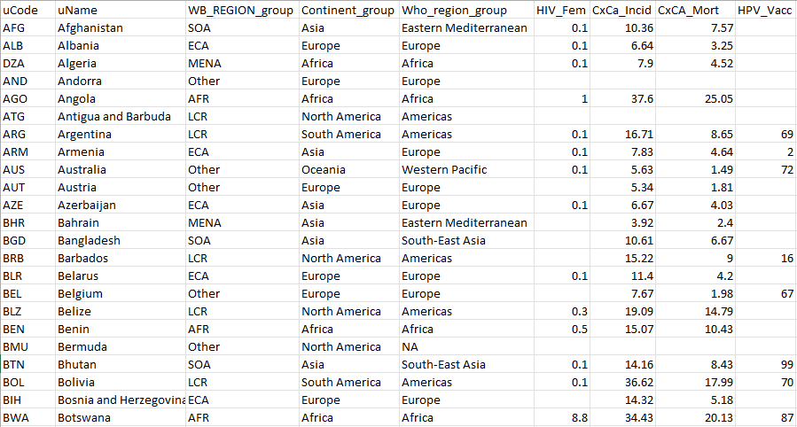
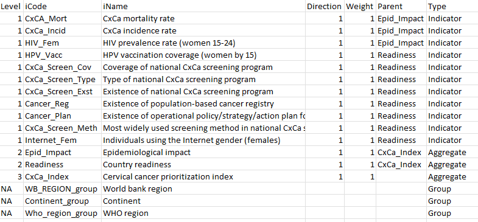
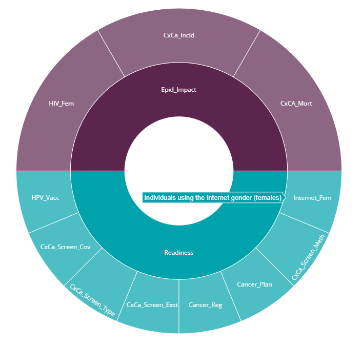

4 Data input
Correctly inputting your data into the {composer} app requires a little care. It is the most difficult step in using the app, but once the data is correctly loaded, things get a lot easier.
The indicator data, as well as the index structure, weights, indicator directions and other metadata are input into the app via an Excel spreadsheet which must follow strict formatting requirements. The spreadsheet must have two tabs: one called “iData” which is the table of indicator data, and “iMeta” which is the table of metadata, including the index structure. Here we carefully walk through the requirements for building these two tables.
4.1 Template and example
Before explaining the specific requirements of the input spreadsheet, it is definitely worth downloading both the input template and the example input data, which are both available at the links in the “Data input” tab.
We recommend that you carefully read the instructions here, and compare to the example data set, which should give a good understanding of how to correctly format your input.
4.2 iData table
The first of the two tables to input into the app is called “iData”, which is short for “indicator data”. This table is unsurprisingly where you enter the data for your indicators, but also the codes and names of each indicator.

The figure above shows the first few rows and columns of the example data. Notice first of all that each row is a unit (countries here), and each column describes things about each unit, such as its code, name, and also its values for each indicator. Let’s now go through each column in turn - we divide into required and optional columns.
In this example data ideally the iCodes should be shorter, also because they cause issues on the framework plot. Can we possibly shorten them? Also: you have a denominator column but currently the app doesn’t support denomination. For the purposes of the example, could we either remove it or make it into Type = “Other” in iMeta?
4.2.1 Required columns
The uCode column should contain a short alphanumeric code for each unit. For example, if units are countries it is advisable to use ISO alpha-3 codes (as in the example data). Otherwise, some requirements for these codes:
- Unique (not the same as other iCodes or uCodes
- No spaces
- Must start with a letter, but can contain numbers otherwise
- Avoid special characters, underscores are OK though
- Ideally should be short (e.g. <10 characters) but descriptive
These requirements are necessary because uCodes are used by the app to reference each unit in calculations.
The uName column gives the full name of the unit (e.g. the country name). Here, there are no specific restrictions other than that you must specify a name for each unit, i.e. don’t leave any blanks.
Both the uCode and uName columns must be present - do not remove them or change their names.
4.2.2 Optional columns
The uCode and uName columns are the only columns that must be present - all other columns are data columns or group columns which are named according to your data. The purpose of each column will be specified later in the iMeta table. Keep in mind that at least one indicator column needs to be present, and ideally several, to make a useful composite indicator.
In the example data, columns G onwards are indicator columns. The first row of each column is the indicator code, which is cross-referenced in the iMeta table (see next section). These codes must be unique and follow rules similar to the uCodes. There are no restrictions on the number of indicator columns, but the entries in each column must be numeric (no text), and any missing data should be left as a blank (don’t write “n/a”, for example).
Again following the example above, columns C, D and E are group columns, which specify unit groupings, such as continents and income groups in the country context. Grouping variables are not used as indicators, i.e. they are not used in the calculation of the index, but can be optionally used in plots, as well as missing data imputation. Notice that unlike indicator columns, the group columns can contain text. There are no specific limitations on the numbers of groups within each grouping variable, but consider that having a very large number of groups may not be very useful in sensibly dividing units. You can have as many grouping columns as you need, but also group columns are completely optional.
It is also possible to include additional columns that are are simply passed through, i.e. they are not used as indicators or as groups. These columns must be tagged as “Other” in the iMeta table (see next section).
In summary, the iData table should provide, for each unit, its code, name, and its values for each indicator and (optionally) grouping variable.
4.3 iMeta table
The iMeta table provides the metadata for each indicator, and also specifies the structure of the index. It should contain a row for each column in iData (except the uCode and uName columns) AND also rows for each aggregate level. It is a little more complex than the iData table.

All the columns shown in the example iMeta table are required.
Beginning with the iCode column, this is required to contain all the column names in the iData table (inclduing groups, etc.), as well as any aggregates that are created by aggregating indicators. The point of the iMeta table is to give further details about each variable. Therefore the codes here need to be exactly the same as the iData column names (excluding uName and uCode) - remember that codes are case-sensitive!
Notice that the first rows of the table also have “1” in the Level column and “Indicator” in the Type column. This tells the app that they are indicators, and at level 1 (the indicator level). From row 17 downwards there are some rows with level = 2: these are “aggregates”, i.e. they are variables (actually composite indicators themselves) that are created by aggregating indicators together. At level 2, therefore, there should be one iCode for each group of indicators to be aggregated. Finally, at Level 3, in this case is the index: there is only one iCode at this level, and it is created by aggregating everything in Level 2 together.
The Parent column defines which indicators fall into which groups: specifically it specifies which group each indicator aggregate belongs to in the level immediately above it. For example, the parent of the mortality rate indicator is “epidemiological_impact” (an aggregate at level 2). The parent of “epidemiological_impact” is “cxca_prioritization_index” (level 3), and the parent of “cxca_prioritization_index” is left blank because it is the top level. This allows a framework to be defined of any number of levels.
Keep in mind that every indicator or aggregate must have a parent, unless it is at the top level. You cannot define a parent that is more than one level above - if needed, define intermediate aggregates with only one indicator/aggregate.
The other columns are more straightforward. The iName column is analogous to the uName column in iData, and gives the full name of the indicator. The Direction column specifies the conceptual direction of the indicator: if higher values of the indicator should imply higher index scores, the direction should be “1”. Otherwise if higher indicator values should imply lower index scores, the direction should be “-1”. In an index measuring environmental sustainability, for example, % renewable energy would have direction 1, and CO2 emissions per capita would have direcion -1.
The Weight column gives the initial weight assigned to each indicator and aggregate. Weights are used when aggregating groups of indicators and aggregates to calculate aggregate scores. Importantly, weights are relative within aggregation groups - they will be rescaled by the app to sum to 1. This means that for three indicators in one aggregation group, setting the weights as (1, 1, 1) is the same as setting them to (2, 2, 2) - in either case, the indicators will each be weighted as 1/3.
We now return to the Type column. Here, each row must either be assigned a type of “Indicator” (anything at level 1), “Aggregate” (any aggregates created from aggregating indicators - level 2 upwards), or else “Group” or “Other”. The last two types are used to label columns in iData that are not part of the index. Type = “Group” is used to point to grouping variables, as described in the previous section. Type = “Other” is for any variables to simply pass through and ignore. Notice that for these last two types the Direction, Weight, Parent and Level columns should be left blank.
It is important to carefully cross-check between the iData and iMeta tables, making sure that all columns in iData are defined in iMeta (except uCode and uName), and the formatting rules are carefully followed.
4.4 Upload
With your input data correctly prepared, you can now upload it to the app. On the “Overview tab”, select the “Upload data” tab in the sidebar and browse to the location of your input data on your computer by clicking the “Browse” button. Having selected the file, click the “Load data” button.
At this point, either the data upload will be successful or not. Here’s what to do.
4.4.1 Successful
If the data upload is successful, the app should output some information about your data to relay what it has understood. In the main window you should see a box with some text output summarising your input. This displays the number of units, indicators, groups, and details about the index structure. Check that this output is what you expect.
Next to the text summary is a sunburst plot of the framework you have specified, which should look something like this:

This is a plot of the index framework as specified in your iMeta table. Hovering over segments will show indicator names, and clicking on segments will zoom in on lower levels. Double click to reset the plot. Like most plots in the app, a snapshot of the plot can be downloaded as a png file by clicking the small camera icon in the upper right of the plot.
The framework plot also shows the effective weight of each indicator and aggregate in the framework, as a result of the weights specified in iMeta and the index structure. Notice that in our example there are three equally-weighted dimensions: “readiness”, “strategic_fit” and “epidemiological_impact”, but these have different numbers of indicators within them. As a result, each indicator in “readiness” is weighted less individually than each in “epidemiological_impact”. This is important to consider in defining the index structure.
On uploading the data there will also be a pop-up notification which reports whether your data has been recognised as country data or not. Data is recognised as country data if the uCodes correspond to ISO alpha-3 codes, as mentioned previously. This enables the maps later in the app. If you have made any mistakes with your ISO codes the app will try to point to them, or if no ISO codes are present it will assume you are not analysing country data and disable the mapping feature.
From here, if you are happy with the details reported by the app, you can move to the next tab.
4.4.2 Unsuccessful
It is not unlikely that you will have made a mistake the first time that you try to upload your data. Don’t worry! The input is a little complex and it is easy to make errors. The app will try to return helpful error messages, which should point to common problems and give the corresponding solutions.
Here are some common problems:
- Mismatch between iMeta and iData tables: remember that codes are case-sensitive, and cross check very carefully to ensure that all columns names from iData are in iMeta (excluding uCode and uName), and all iCodes except those with Type = “Aggregate” are columns in iData.
- Non-numeric data: make sure each column of data is actually formatted as numeric. Even it looks like a number, Excel may have interpreted it as text. In Excel, by default, a cell formatted as a number will be right-aligned, whereas text is left-aligned (see below).

- Aggregates with no “children”: avoid specifying an aggregate in iMeta which is not the parent of at least one indicator or aggregate.
- Altering spreadsheet: try above all to avoid modifying the spreadsheet in unexpected ways. For example, do not add extra or numbers in cells near the tables. Do not change the names of required columns, and don’t move tables, or rename tabs. You CAN add extra tabs to the spreadsheet with other calculations as the app will only look for the iData and iMeta tabs.
4.5 What’s next
From here, things get a lot smoother: the app should now work with fairly minimal interventions on your part. Move to the “Data operation” tab group to begin processing your data!